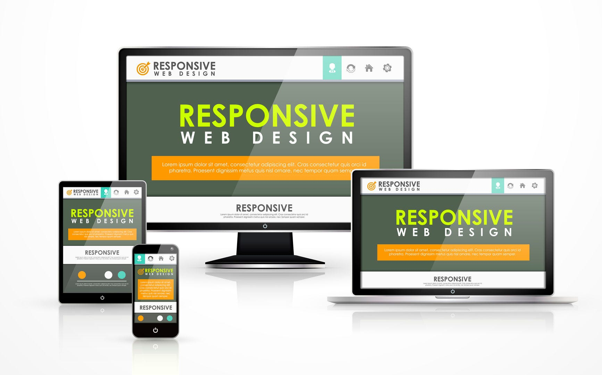

Introduction to Web Development

This section covers the basics of web development, including the structure and purpose of HTML, CSS, and JavaScript. Understanding these technologies is crucial for building modern, dynamic websites.
Here are some useful resources to get started:
Responsive Web Design
Responsive web design ensures that your website looks good on all devices, from desktops to mobile phones. This section discusses the principles of responsive design and how to implement them using CSS media queries and flexible layouts.
Check out these resources for more information: